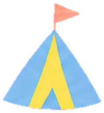
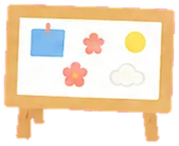
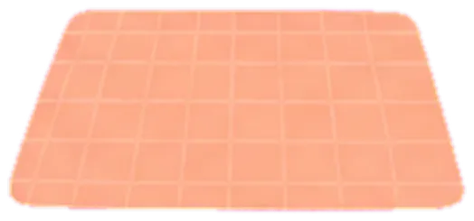
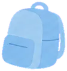

調べるのが苦手でも、いっしょに選ぼう。 キャリアコンサルタント
養成講座の選び方・比較
忙しくても続けやすい7校を、
費用・期間・受け方・給付金で
どの学校にも属さないから、
- 14つ選んで
しぼる - 2比較表で
くらべる - 3説明会で
確かめる










STEP14つ選んで、合う学校をしぼろう
モヤン
サニー先生
使い方下の4つの質問に、
STEP3説明会に参加して、気になることを質問しよう
ちゃん
説明会で
- 子どもが
画面に 映っても 大丈夫？ - 休んだときの
振替は、 何回まで できる？ - 給付金の
手続きは、 いつまでに すればいい？
CAMPAIGN
合う学校に、キャンペーンがあるかチェックしよう！
申し込む
10月17日時点の内容です。
「PR」の
載せる
条件をくわしく見る
- LEC東京リーガルマインド
- 12月〜3月開講クラスに、
10月31日(土)までに 申し込むと、 受講料が 10,000円割引(330,000円→320,000円)。 申込者全員に、 試験対策Web講座3点セット(参考価格33,000円)も つきます。 - 日本マンパワー
- 説明会・
講座体験会に 参加すると、 受講料に 使える 11,000円引きの クーポンが もらえます。 - 地域連携プラットフォーム
- 18歳以下の
お子さんを 育てている 保護者は、 Amazonギフト券 10,000円分が もらえます。 給付金の 対象外の人(学生・公務員・主婦・個人事業者など)は、 27,000円の 割引も あります。 特典を 組み合わせられるかは、 申し込む 前に 事務局で 確かめてください。 - GCDF-Japan
- 無料説明会か個別相談に参加して、11月30日までに2027年1月開講のコースへ申し込むと、受講料が16,500円引き(396,000円→379,500円・税込)。1月開講の申込者は、模試(31,900円分)・過去問・合同ロールプレイ練習会も無料です。
- 日本産業カウンセラー協会
- 説明会に参加して、その場で申し込むと22,000円引き(330,000円→308,000円・税込)。会員割引・早期申込み割引とは、どれか1つだけ使えます。
- 大原学園
- 無料説明会を予約すると、入学金(6,000円・はじめて大原に申し込む人だけ)が免除になるクーポンがもらえます。
Q&A
申し込む前に、気になること
申し込む
答えは
モヤン
サニー先生
-
1
そもそも、
養成講座って なに？ 
サニー先生
国家試験を受けるための 「受験資格」が とれる講座だよ。 国が
認めた 養成講座(150時間)を 修了すると、 国家試験を 受けられます。 受験する 人の が、約9割 この道です。 期間は
最短0.5〜6か月ほど。 土日だけで 通える 学校も あります。 出典: 厚生労働省
「第31回試験結果の 概要」 -
2
いくらかかる？
サニー先生
講座は、 だいたい30〜50万円だよ。 給付金が使えれば、297,000円の講座は、修了するだけで実質148,500円に。条件を満たすと、さらに戻ります。
-
3
-
4
合格率は？
サニー先生
学科は54.8%、 実技は61.7%だよ。 2026年7月の
第32回の 結果です。 どちらも、 半分以上が 受かって います。出典: キャリアコンサルティング協議会・
日本キャリア開発協会の 公表値 -
5
資格を
取ったら、 仕事になる？ サニー先生
すぐ仕事になる、 とは言えないよ。 正直に話すね。 登録者の
約3割は、 この1年 活動していませんでした。 多くの人は、 会社員のまま 本業に 活かしています。 だから、
修了後に 仲間や 実践の場が あるかも 見ておくと 安心です。 出典: 労働政策研究・
研修機構の 調査(2022年) -
6
このサイトから
申し込むと、 損しない？ サニー先生
損はしないよ。 安心してね。 ボタンは
各校の 公式ページを 開くだけ。 受講料は 上がりません。 割引の
条件は 学校ごとに ちがうので、 申し込む 前に 確かめてください。
サニー先生
モヤン「ボクに
PROFILE
このサイトを書いている人